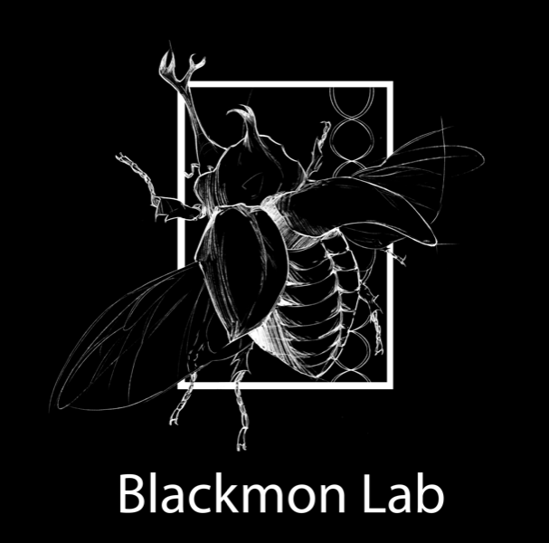
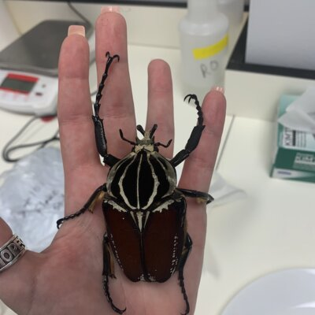
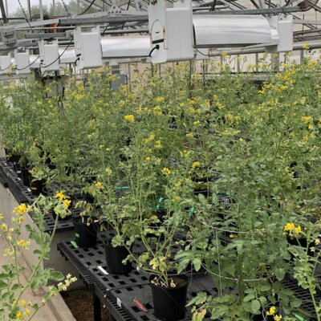
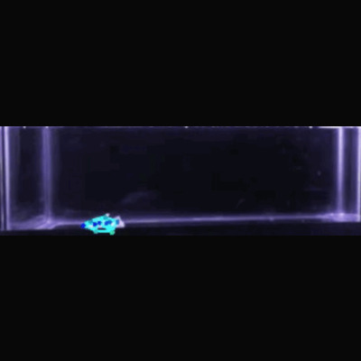
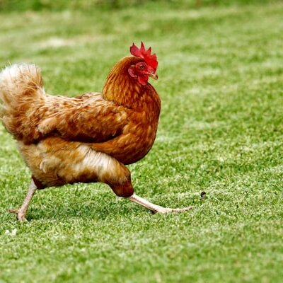
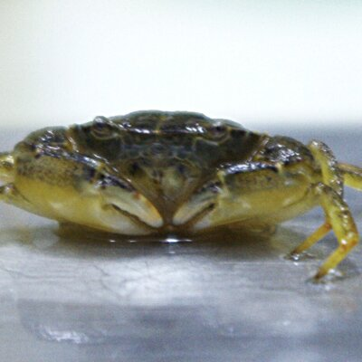
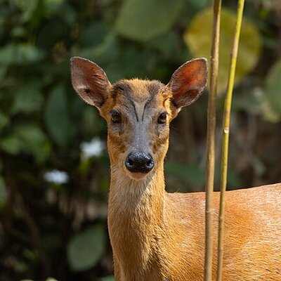

Beetle artwork by Meg McConnell
"Nothing in biology makes sense except in the light of evolution" - Dobzhansky 1973
Darwin gave biology its operating system in 1859. Evolution 1.0 — a framework so generative that nothing in our field has made sense without it for 165 years. AI 1.1 is the next instrument biologists pick up: a tool that lets us read the literature, integrate the data, and reason about life at scales no individual researcher ever could. Same discipline. Same questions. Vastly bigger reach.
We think this is the most exciting moment to be doing evolutionary biology in a generation, and we are working in the open — agent-readable data, validated pipelines, published failure modes — so the next set of researchers (and the AI systems they use) can pick up where we leave off.
63,682 karyotypes across 55 eukaryotic clades show dysploidy rates vary 844-fold, and that even birds — the textbook example of chromosomal stasis — exceed the global median once microchromosome dynamics are resolved. Stasis isn't kingdom-deep; it's life-history-deep.

Karyotype evolution and sex chromosome systems across Coleoptera - the most species-rich order of animals.

Chromosome number variation and its link to adaptation in Solanaceae, including wild and domesticated species.

Genetics of aggression, color, and sexual selection - and how domestication shapes phenotypic evolution.

Sex-linked traits and sexual antagonism in a model system for understanding domestication.

The evolution of freshwater invasion and its genomic consequences across Brachyura.

Broad-scale comparative analyses of sex chromosome evolution and karyotype diversity.